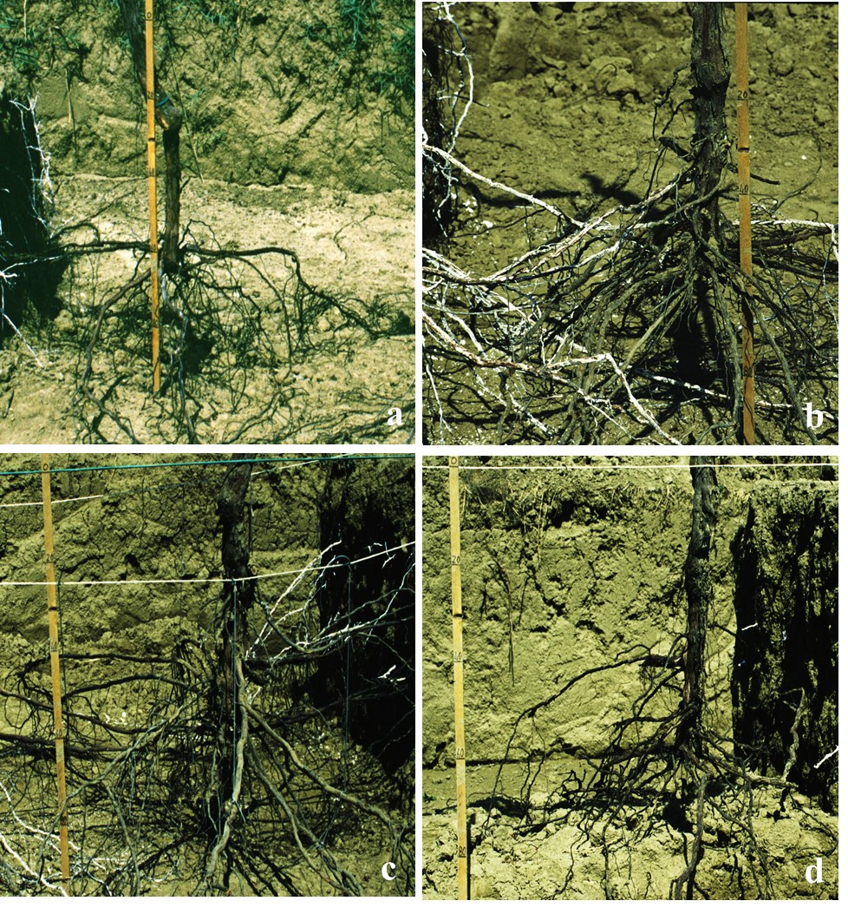
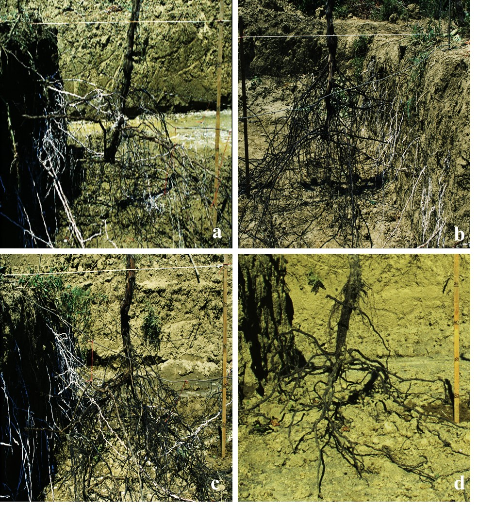

Визуализация стратегий выживания на тяжелых глинистых почвах (Сицилия)

На этом снимке представлены четыре варианта развития корневой системы в условиях тяжелой глины. Обратите внимание на распределение биомассы по глубине профиля.

Второй ракурс позволяет лучше рассмотреть толщину скелетных корней и характер ветвления. Белые окрашенные корни четко выделяются на фоне почвы, показывая траекторию роста.